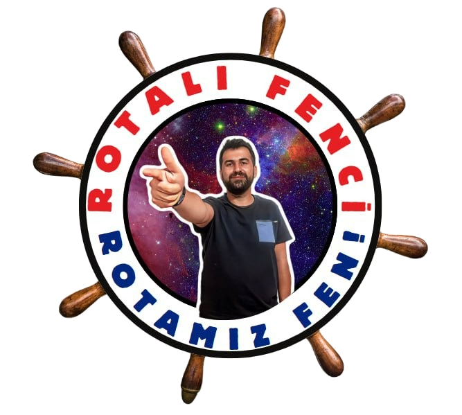
Evrenin en muazzam üç gök cisminin sırlarını, katmanlarını, akıl almaz hareketlerini ve büyüleyici evrelerini keşfetmeye hazır mısın?
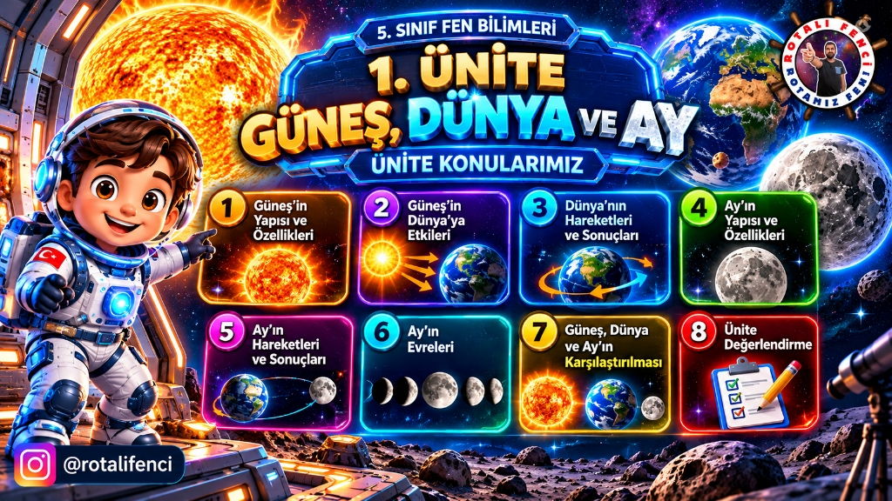
Dünya'mız da dâhil olmak üzere var olan tüm maddeleri, enerjiyi, galaksileri, yıldızları ve sonsuz boşluğu içine alan bütündür.
Dünya atmosferinin dışında kalan, gök cisimlerinin yüzdüğü sonsuz karanlık boşluktur. (Dünya uzayın içinde bir adadır!)
Uzaydaki yıldızlar, gezegenler ve asteroitlerin her biridir. Ay, Dünya'nın çekimindeki tek doğal uydumuzdur.
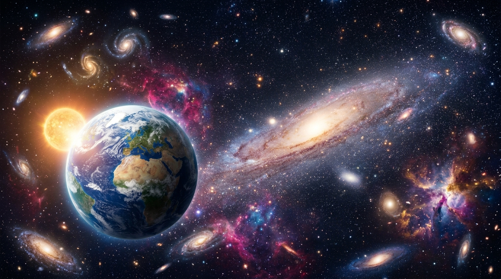
Dünya bir GEZEGENDİR. Kendi ışığı yoktur, Güneş'ten aldığı ışığı yansıtır. Şekli kutuplardan basık, ekvatordan şişkin GEOİT (KÜRESEL) yapıdadır.
Yüzeyinin yaklaşık %71'i (3/4'ü) sularla, %29'u (1/4'ü) karalarla kaplıdır. Uzaydan parlak mavi göründüğü için 'Mavi Gezegen' denir.
Üzerinde yaşam olduğu bilinen tek gök cismidir. Katmanları: Hava küre (Atmosfer), Su küre, Taş küre (Yer kabuğu), Ateş küre (Manto) ve Çekirdek'tir.
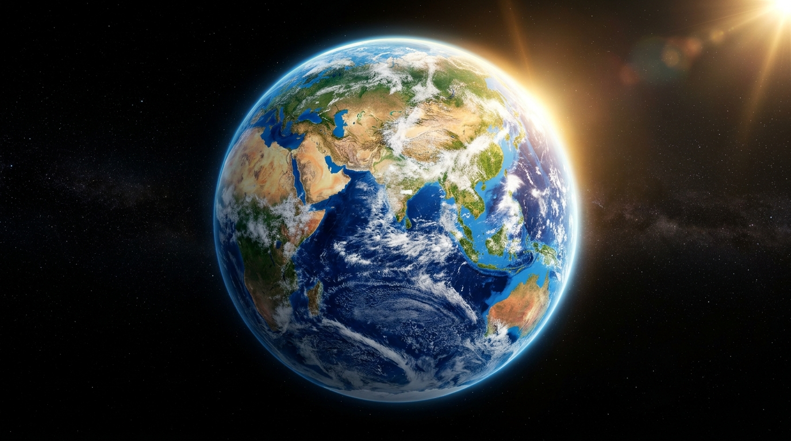
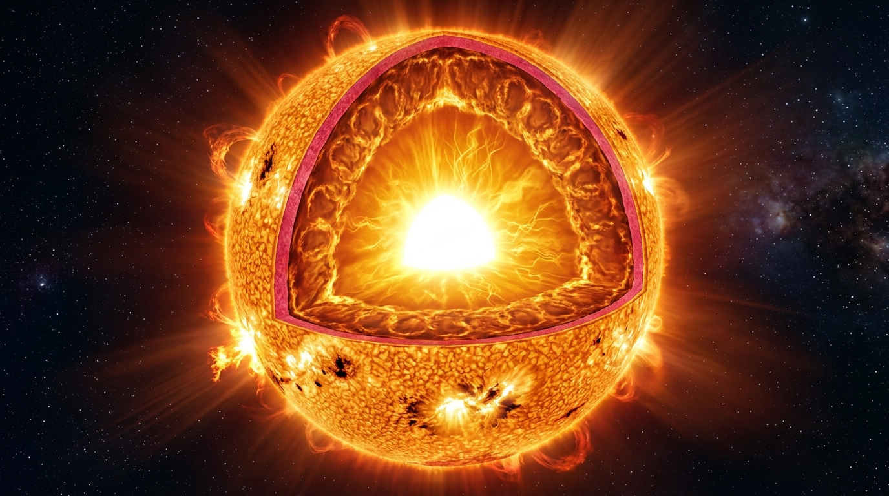
Güneş'in kalbidir. Aşırı basınç ve sıcaklıkta hidrojen helyuma dönüşür; tüm yaşam enerjisi burada doğar.
Güneş'in gördüğümüz parlak sarı yüzeyidir. Güneş lekeleri bu katman üzerinde yer alır.
Işık küreyi saran yaklaşık 2.000 km kalınlığında kırmızımsı parlama ve gaz fışkırmaları katmanıdır.
En dıştaki dev gaz halesidir. Tam Güneş tutulması anında çıplak gözle muhteşem beyaz bir taç gibi ışıldar.
Güneş katı veya sıvı değildir, devasa akkor bir gaz topudur: Yaklaşık %73 Hidrojen (H), %25 Helyum (He) ve %2 diğer elementlerden oluşur.
Çekirdekteki aşırı sıcaklık ve basınçta hidrojen atomları birleşerek helyuma dönüşür. Bu dönüşüm sırasında açığa çıkan devasa enerji uzaya ışık ve ısı olarak yayılır.
Güneş her bir saniyede tam 4 milyon ton maddeyi saf enerjiye dönüştürür ve bu süreç 5 milyar yıldır hiç aksamadan devam etmektedir!
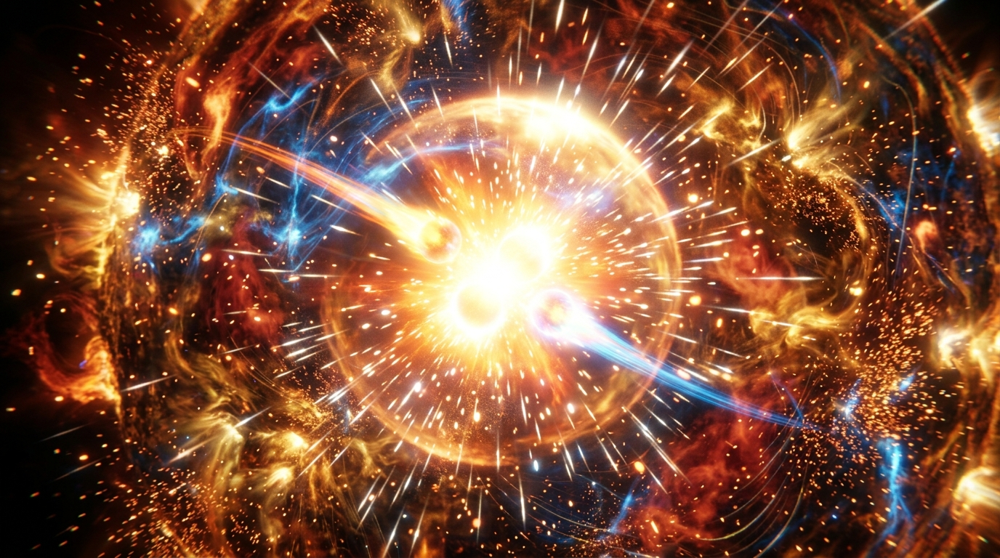
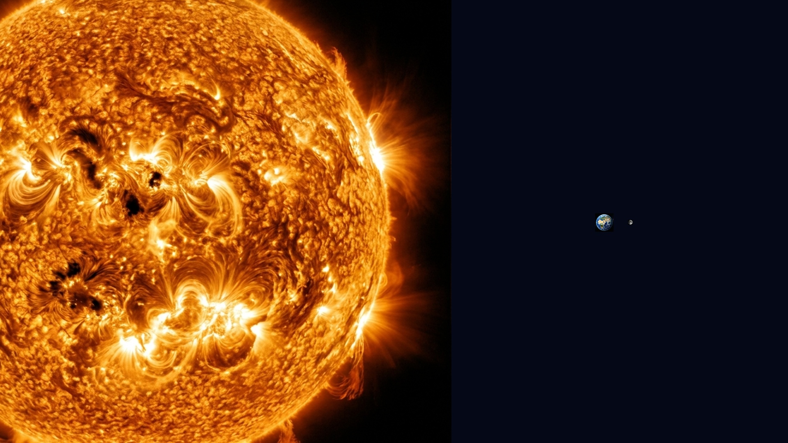
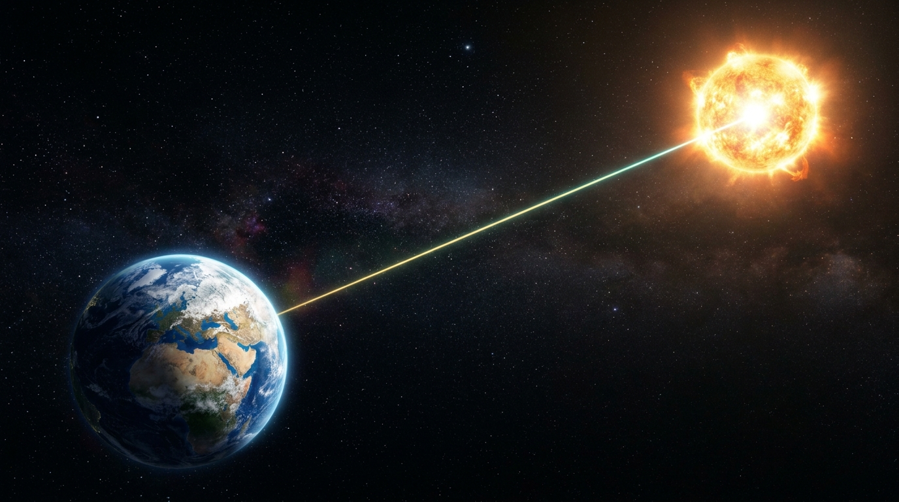
Güneş, kendi ekseni etrafında SAAT YÖNÜNÜN TERSİNE (batıdan doğuya / soldan sağa) döner. Bunu ilk kez Galileo lekeleri izleyerek kanıtlamıştır.
Katı olmadığı için Güneş'in her yeri aynı hızda dönmez: Ekvator bölgesi ~25 günde, kutup bölgeleri ise ~35 günde bir tam turunu tamamlar.
Güneş tüm sistemiyle beraber Samanyolu Galaksisi'nin merkezi etrafında dolanır; bir tam tur yaklaşık 230 milyon yıl sürer!
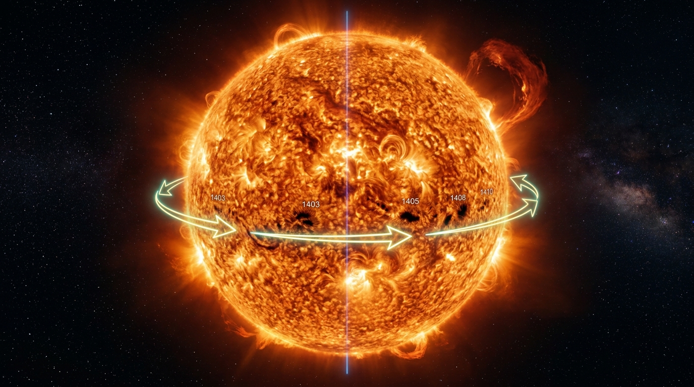
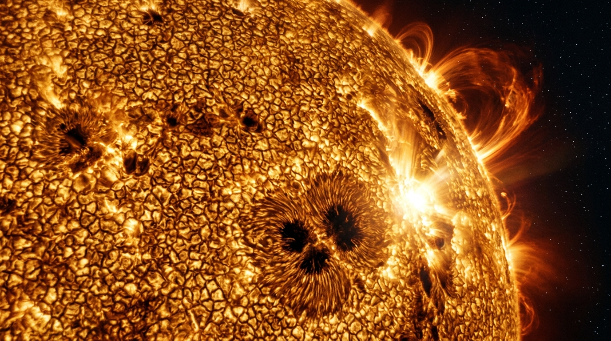
Güneş'in görünür yüzeyinde (ışık küre) yer alan, çevresindeki akkor gazlara göre daha soğuk oldukları için koyu renkli görünen bölgelerdir.
Güneş yüzeyi ortalama 5.500 °C iken, lekelerin sıcaklığı ~3.500 °C'dir. Aradaki ~2.000 °C'lik sıcaklık farkı sebebiyle zıtlık oluşur ve koyu görünürler.
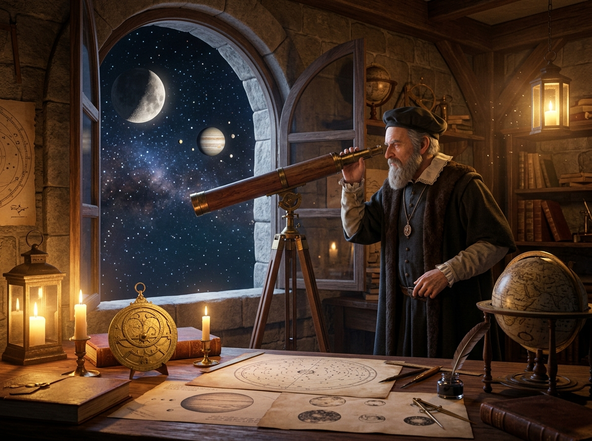
Galileo, 1610'lu yıllarda teleskopla lekelerin hep aynı yöne kaydığını gözlemleyerek Güneş'in kendi ekseni etrafında döndüğünü tarihte ilk kez kanıtlamıştır!
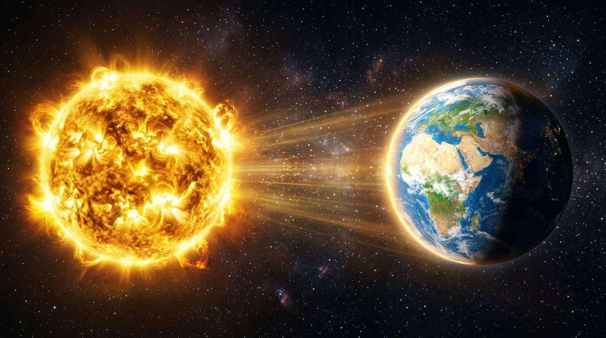
Dünya'mızın temel doğal ısı ve ışık kaynağıdır. Gezegenimizin donmasını önler ve yaşamı sürdürür.
Yeşil bitkiler Güneş ışığını kullanarak besin ve oksijen üretir. Tüm besin zincirinin temeli Güneş'tir.
Suyu buharlaştırarak bulutları oluşturur ve yağmur olarak yeryüzüne döndürerek su döngüsünü çalıştırır.
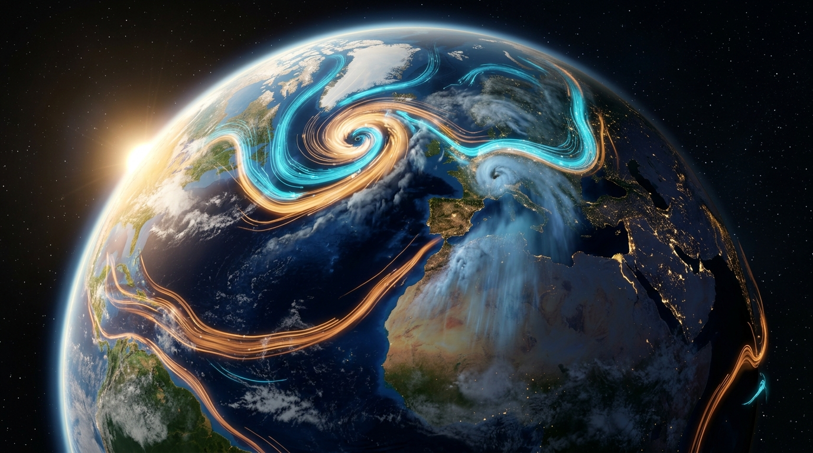
Dünya'yı farklı oranlarda ısıtarak sıcaklık ve basınç farkları yaratır; rüzgârları ve hava olaylarını oluşturur.
Ay, Dünya'mızın TEK DOĞAL UYDUSUDUR. Tıpkı Güneş ve Dünya gibi şekli KÜRESELDİR.
Dünya'ya EN YAKIN gök cismidir (~384.400 km). Çapı (~3.476 km) Dünya'nın yaklaşık 4'te 1'i (1/4) kadardır.
Kendi ışığını üretemez. Güneş'ten aldığı ışığı bir dev ayna gibi Dünya'ya yansıttığı için geceleri parlak görünür.
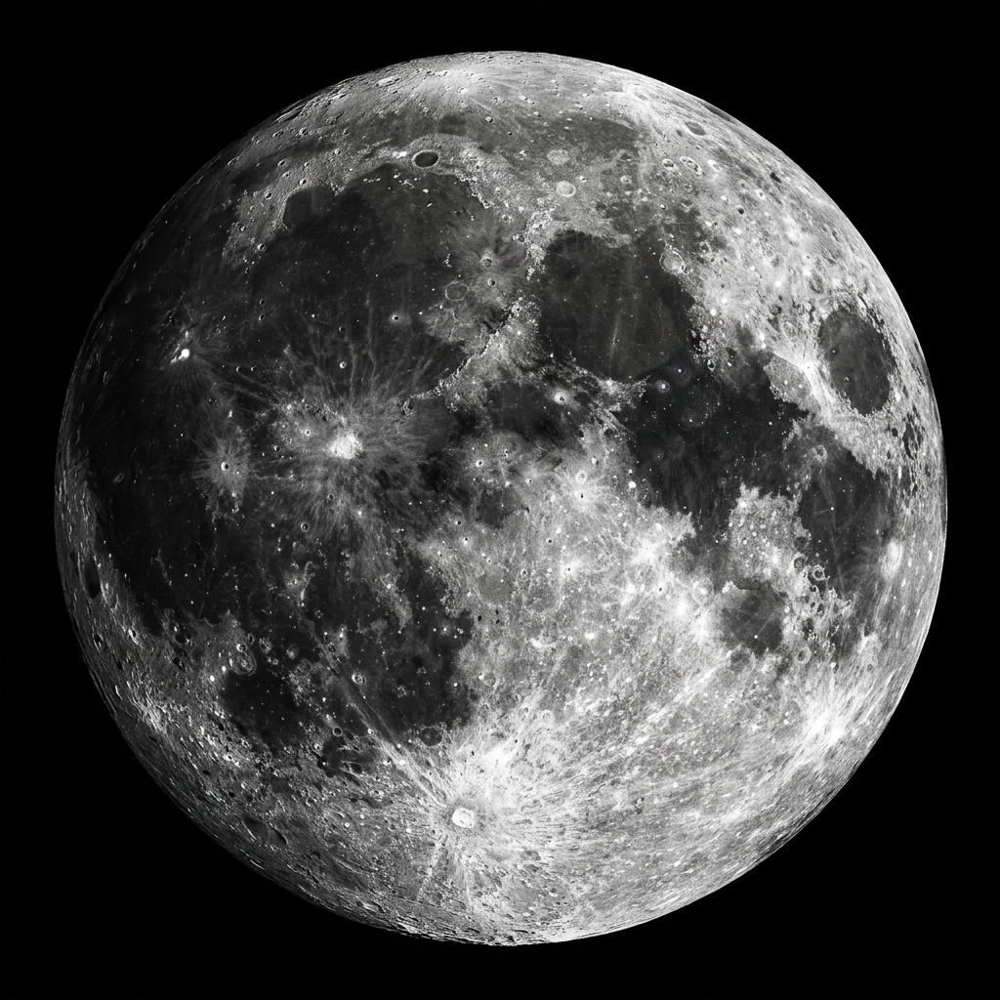
Açık renkli, engebeli ve kayalık yüksek bölgelerdir. Ay yüzeyinin büyük bölümünü bu dağlık yaylalar kaplar.
Koyu renkli görünen geniş düzlüklerdir. Su kesinlikle yoktur! Milyarlarca yıl önceki lav akıntılarının soğumasıyla oluşan koyu bazalt kayalarıdır.
Ay yüzeyi, milyarlarca yıllık gök taşı çarpmalarıyla ufalanmış camımsı, çok ince ve mikroskobik toz tabakasıyla örtülüdür.
Uzayda başıboş dolaşan gök taşlarının (meteorların) Ay yüzeyine yüksek hızla çarpması sonucu açılan devasa derin çukurlardır.
Ay'ın koruyucu bir atmosferi olmadığı için en minik gök taşları bile yanıp parçalanmadan doğrudan yüzeye çarparak krater açar.
Ay'da rüzgâr, yağmur, kar veya akarsu gibi hava ve aşınma olayları bulunmadığı için kraterler ilk günkü gibi bozulmadan kalır.
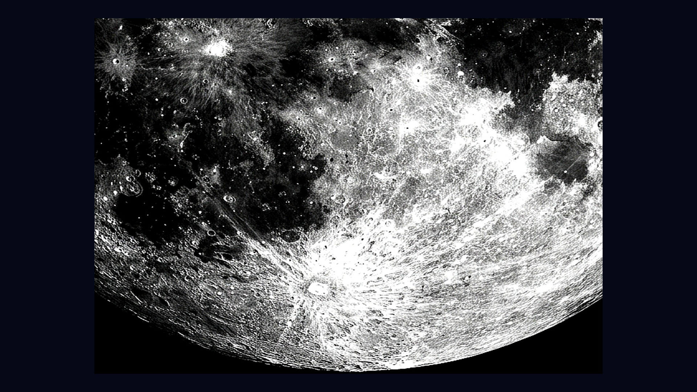
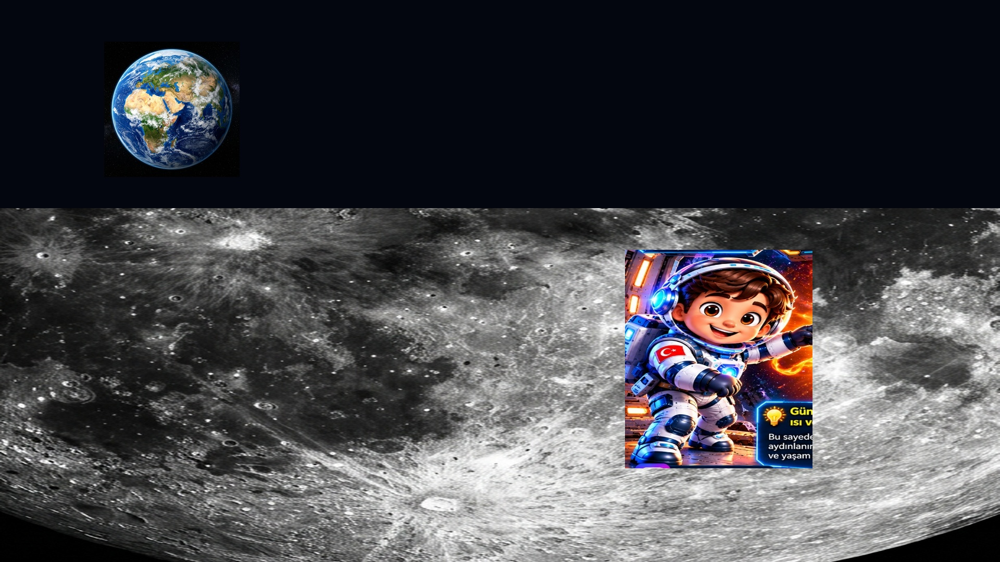
| ÖZELLİK |
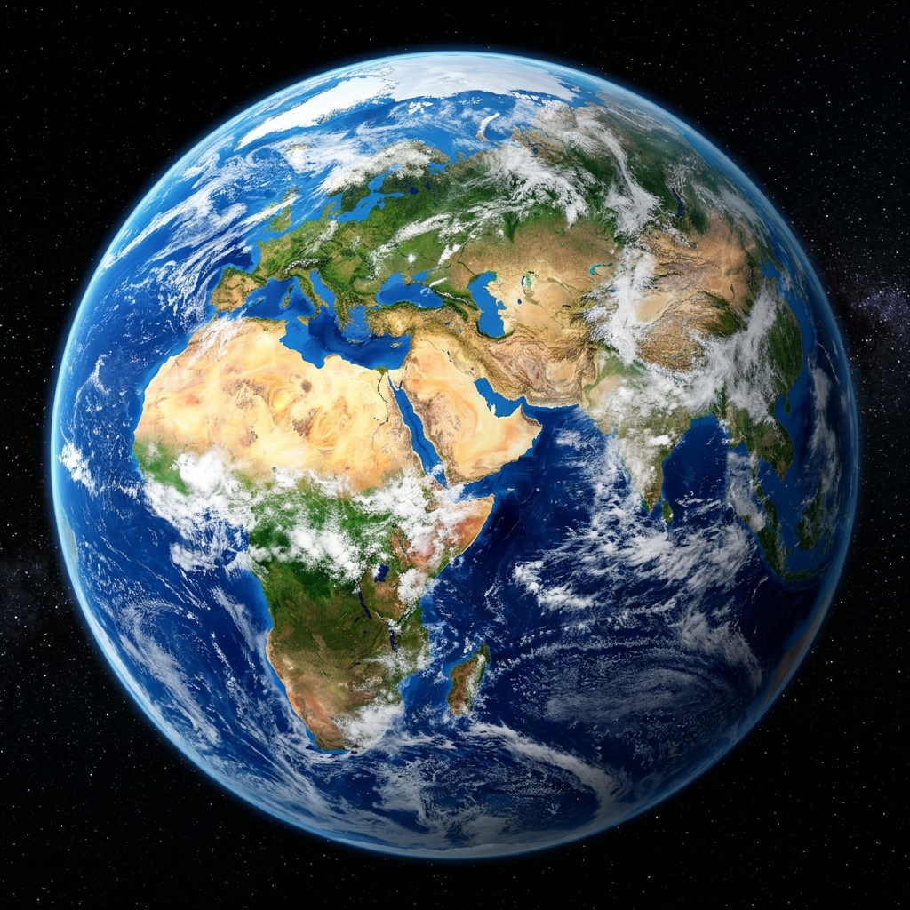 DÜNYA |
AY
|
|---|---|---|
| Gök Cismi Türü | Gezegen | Doğal Uydu |
| Çap | ~12.742 km (Yaklaşık 3.7 kat büyük) | ~3.476 km |
| Atmosfer | Kalın ve koruyucu (Yaşam gazları) | Yok denecek kadar ince |
| Hava Olayları | Yağmur, kar, rüzgâr var | Hiçbir hava olayı yok |
| Sıcaklık Farkı | Ilıman ve dengeli | Aşırı yüksek (-153 °C ile +107 °C) |
| Yer Çekimi | 1G (Güçlü çekim) | Dünya'nın yaklaşık 1/6'sı |
Gökyüzüne baktığımızda Ay adeta dev bir fener gibi bembeyaz ışıldar. Ancak bu parlaklık kendi enerjisi değildir!
Kendi ışığını kesinlikle kendisi üretemez. Güneş'ten aldığı ışığı bir dev ayna gibi Dünya'mıza yansıtır.
• Işık Kaynağı: Güneş, yıldızlar, yanan ampul, ateş böceği.
• Yansıtıcı Cisim: Ay, Dünya, ayna, alüminyum folyo.
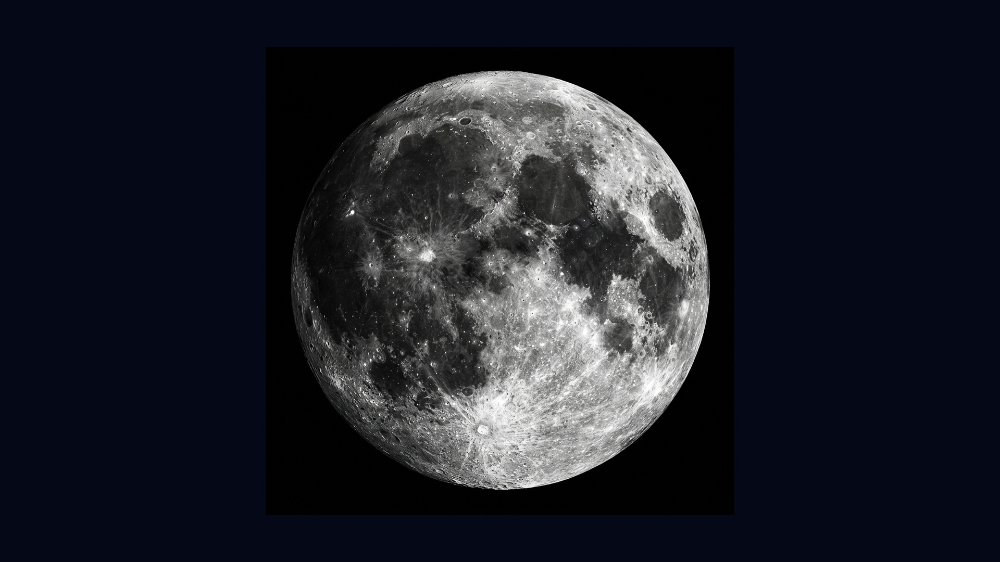
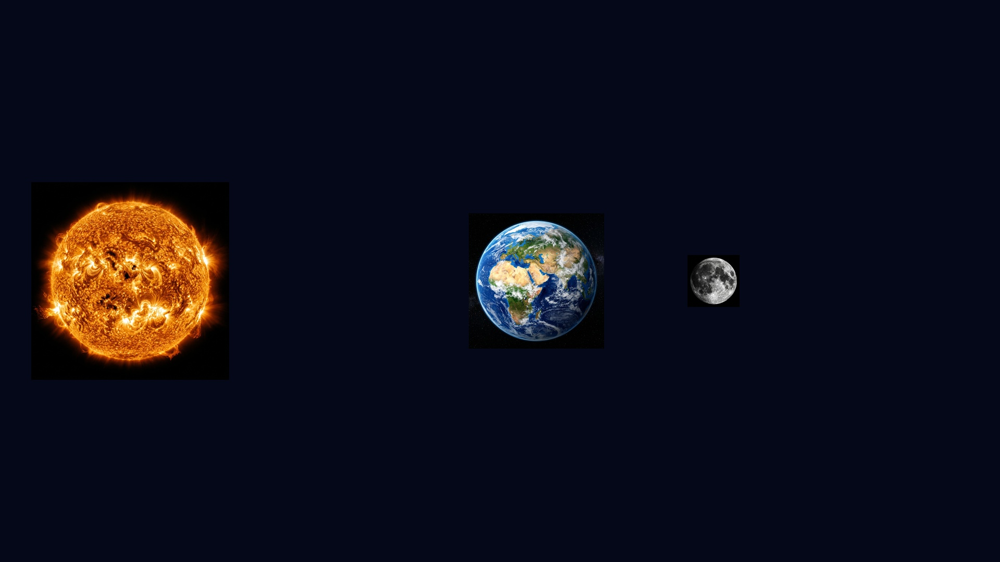
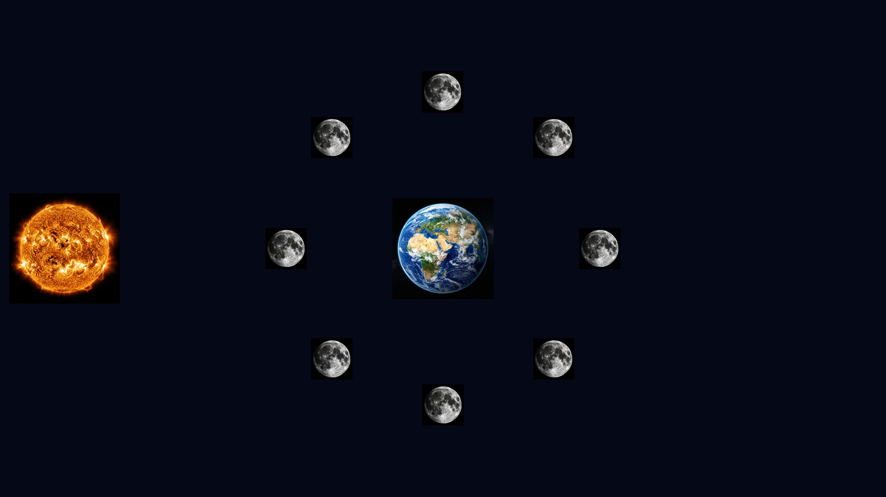
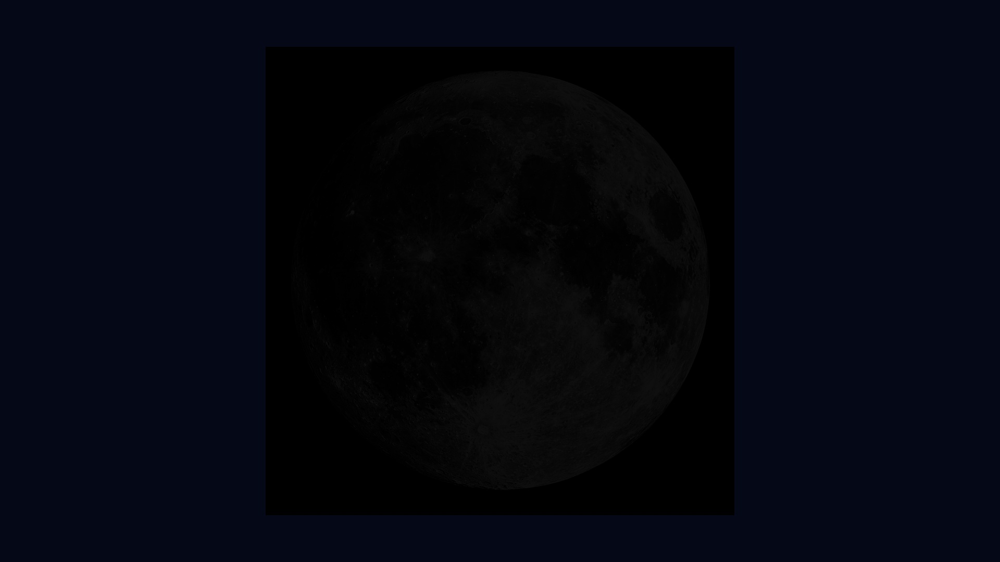
Dünya'ya bakan yüzü ışık almaz. Gökyüzünde görünmez!
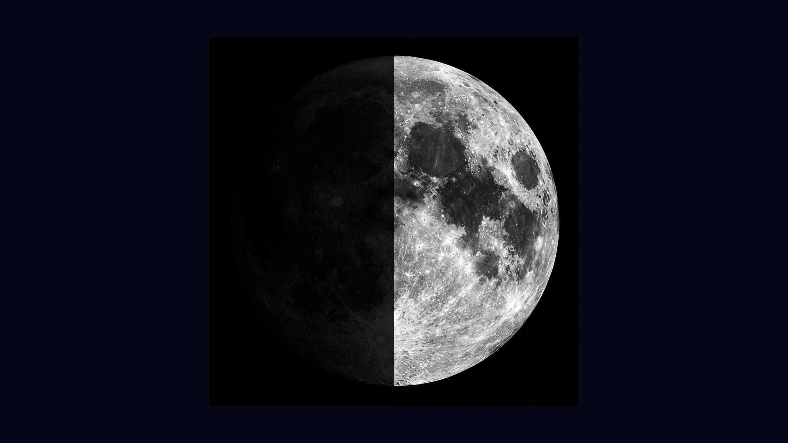
Ay'ın sağ yarısı aydınlıktır. Gökyüzünde düz «D» harfi görünür.
Dünya'ya bakan yüzü tamamen aydınlıktır. Işıl ışıl tam dairedir.
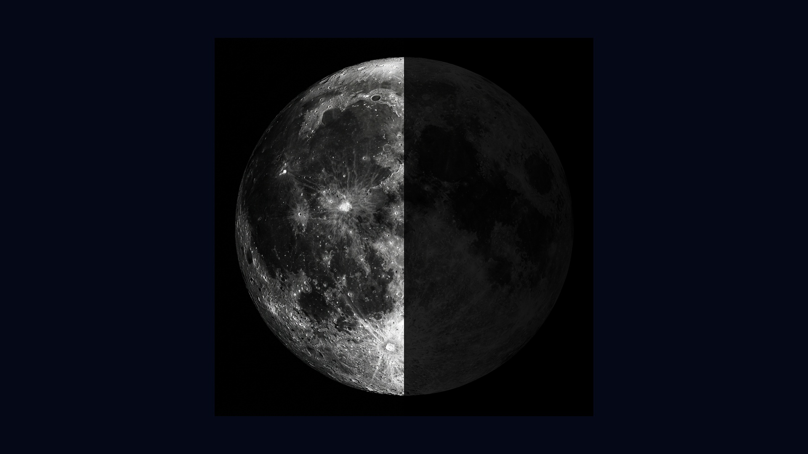
Ay'ın sol yarısı aydınlıktır. Gökyüzünde ters «D» harfi görünür.
Ay, Güneş ile Dünya'nın arasına girer. Güneş ışığı Ay'ın Dünya'dan görünmeyen arka yüzünü aydınlatır.
Dünya'ya bakan ön yüzü tamamen karanlıkta kaldığı için gökyüzünde AY HİÇ GÖRÜNMEZ.
Sabah Güneş ile birlikte doğar, gün boyu Güneş ile gökyüzünde seyreder ve akşam Güneş batarken batar.
Yeni Ay evresinden yaklaşık 7 gün sonra gerçekleşir. Ay, yörüngesinin 1/4'ünü tamamlamıştır.
Dünya'dan bakıldığında Ay'ın SAĞ YARISI AYDINLIK, sol yarısı karanlık görünür. Düz 'D' harfine benzer.
Öğle saatlerinde doğar, gün batımında gökyüzünün en tepesinde parlar ve gece yarısı batar.
Dünya, Güneş ile Ay'ın arasındadır. Yeni Ay'dan yaklaşık 14 gün (2 hafta) sonra gerçekleşir.
Dünya'ya bakan yüzünün TAMAMI Güneş ışığı alır. Gökyüzünde kusursuz, parlak bir DAİRE olarak parıldar.
Güneş batarken doğar, bütün gece boyunca yeryüzünü aydınlatır ve sabah gün doğumunda batar.
Dolunay evresinden yaklaşık 7 gün, Yeni Ay'dan ise yaklaşık 21 gün (3 hafta) sonra oluşur.
Dünya'dan bakıldığında Ay'ın SOL YARISI AYDINLIK, sağ yarısı karanlık görünür. Ters 'D' harfine benzer.
Gece yarısı doğar, sabah ve öğle saatlerine kadar gündüz gökyüzünde beyaz bir silüet olarak izlenebilir.
Yeni Ay ile İlk Dördün arasında görülür. Akşam gün batımından hemen sonra batı ufkunda incecik zarif bir yay olarak ışıldar.
Son Dördün ile Yeni Ay arasında görülür. Şanlı Türk Bayrağımızdaki hilal bu evredir! Sabah gün doğumundan önce doğu ufkunda parlar.
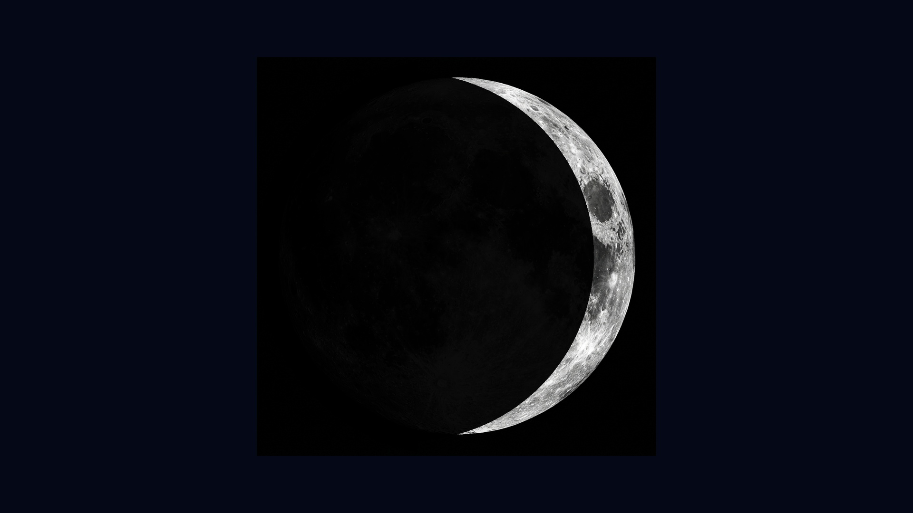
İlk Dördün ile Dolunay arasında görülür. Ay'ın Dünya'ya bakan yüzünün yarıdan fazlası aydınlıktır; her gece biraz daha şişmanlar.
Dolunay ile Son Dördün arasında görülür. Dolunay'dan sonra sağ tarafından azar azar incelmeye başlayan evredir.
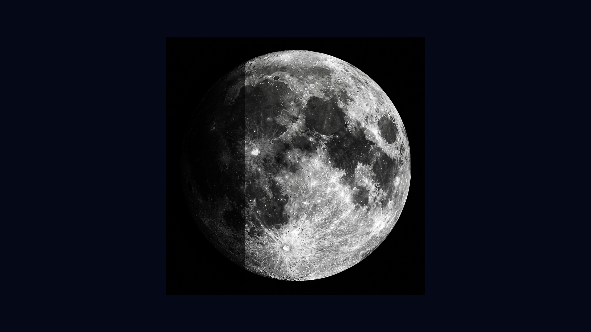
| ÖZELLİK |
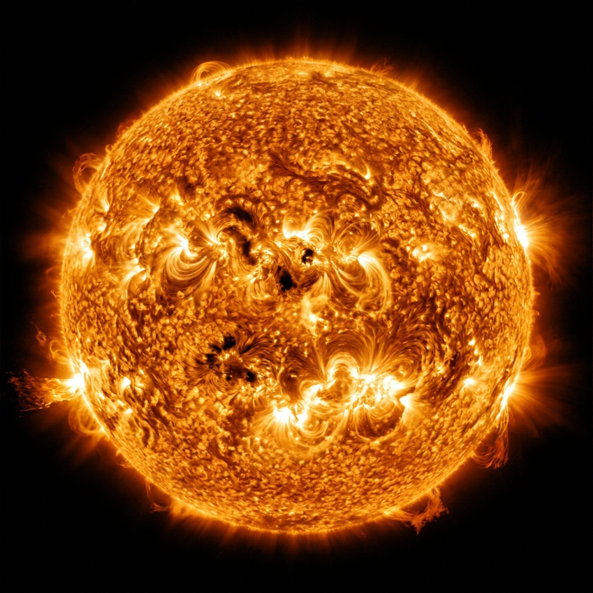 GÜNEŞ |
DÜNYA
|
AY
|
|---|---|---|---|
| Gök Cismi | Yıldız | Gezegen | Doğal Uydu |
| Şekli | Küresel | Küresel (Geoit) | Küresel |
| Işık Durumu | Işık Kaynağı | Yansıtıcı Cisim | Yansıtıcı Cisim |
| Dönme Yönü | Saat yönü tersi | Saat yönü tersi | Saat yönü tersi |
| Hareket Sayısı | 1 Dönme + 1 Dolanma | 1 Dönme + 1 Dolanma | 3 Hareket |
| Büyüklük Sırası | GÜNEŞ > DÜNYA > AY | ||
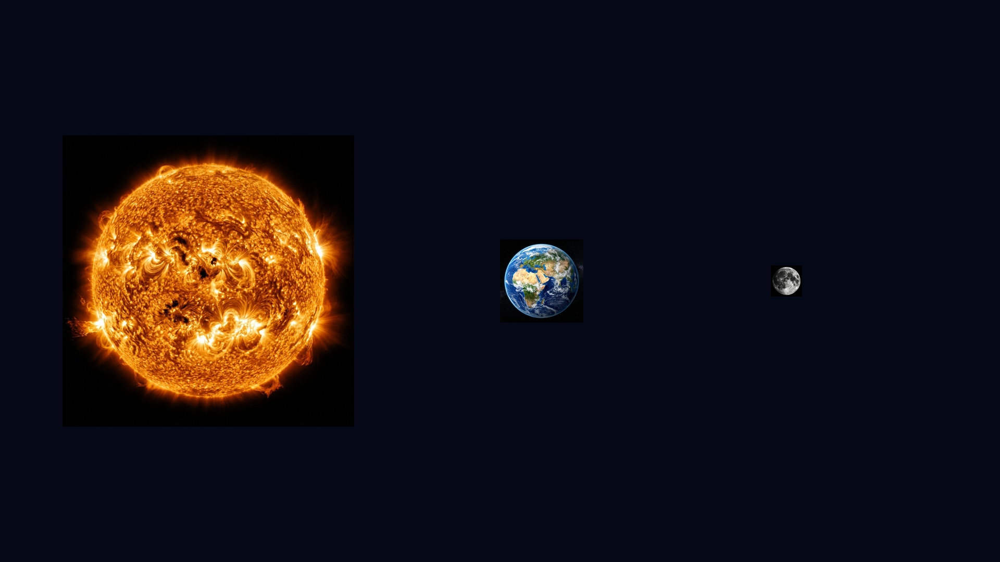
Uzaya gönderilen ve Dünya yörüngesine yerleşen ilk yapay uydu olmuştur.
Sputnik-2 ile yörüngeye çıkan ve uzay ortamının canlılar üzerindeki etkisini kanıtlayan ilk canlı köpek.
Vostok-1 ile uzaya çıkan ilk insan olmuştur: «Dünya masmavidir, ne kadar harika!»
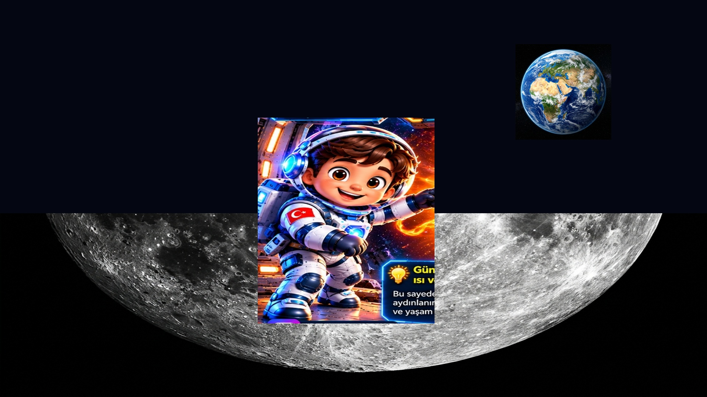
Apollo-11 ile Ay'a ayak basan ilk insan: «Benim için küçük, insanlık için dev bir adım!»
Güneş'in dev enerjisini ve katmanlarını, Ay'ın kraterlerini ve atmosferini, Dünya ve Ay'ın dönme/dolanma sürelerini, ve 8 Ay evresinin sıralamasını eksiksiz öğrendin!